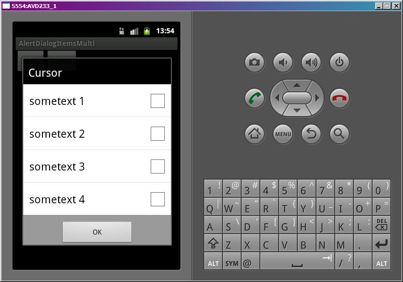
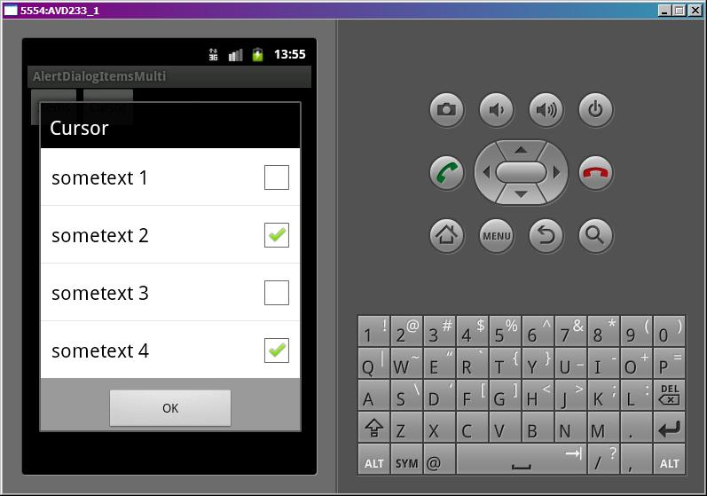

В этом уроке:
- формируем список с множественным выбором в диалоге
Урок будет аналогичен прошлому. Мы будем формировать в диалоге список с множественным выбором и определять какие элементы были выбраны (чекнуты). На этот раз мы сможем работать только с массивом и курсором. Дать диалогу адаптер не получится, нет соответствующего метода. Это особенности реализации.
Создадим проект:
Project name: P0641_AlertDialogItemsMulti
Build Target: Android 4.0
Application name: AlertDialogItemsMulti
Package name: ru.startandroid.develop.p0641alertdialogitemsmulti
Create Activity: MainActivity
В strings.xml пропишем тексты:
<?xml version="1.0" encoding="utf-8"?>
<resources>
<string name="app_name">AlertDialogItemsMulti</string>
<string name="items">Items</string>
<string name="cursor">Cursor</string>
<string name="ok">OK</string>
</resources>main.xml:
<?xml version="1.0" encoding="utf-8"?>
<LinearLayout
xmlns:android="http://schemas.android.com/apk/res/android"
android:layout_width="fill_parent"
android:layout_height="fill_parent"
android:orientation="horizontal">
<Button
android:id="@+id/btnItems"
android:layout_width="wrap_content"
android:layout_height="wrap_content"
android:text="@string/items"
android:onClick="onclick">
</Button>
<Button
android:id="@+id/btnCursor"
android:layout_width="wrap_content"
android:layout_height="wrap_content"
android:text="@string/cursor"
android:onClick="onclick">
</Button>
</LinearLayout>DB.java:
package ru.startandroid.develop.p0641alertdialogitemsmulti;
import android.content.ContentValues;
import android.content.Context;
import android.database.Cursor;
import android.database.sqlite.SQLiteDatabase;
import android.database.sqlite.SQLiteDatabase.CursorFactory;
import android.database.sqlite.SQLiteOpenHelper;
public class DB {
private static final String DB_NAME = "mydb";
private static final int DB_VERSION = 1;
private static final String DB_TABLE = "mytab";
public static final String COLUMN_ID = "_id";
public static final String COLUMN_CHK = "checked";
public static final String COLUMN_TXT = "txt";
private static final String DB_CREATE =
"create table " + DB_TABLE + "(" +
COLUMN_ID + " integer primary key, " +
COLUMN_CHK + " integer, " +
COLUMN_TXT + " text" +
");";
private final Context mCtx;
private DBHelper mDBHelper;
private SQLiteDatabase mDB;
public DB(Context ctx) {
mCtx = ctx;
}
// открыть подключение
public void open() {
mDBHelper = new DBHelper(mCtx, DB_NAME, null, DB_VERSION);
mDB = mDBHelper.getWritableDatabase();
}
// закрыть подключение
public void close() {
if (mDBHelper!=null) mDBHelper.close();
}
// получить все данные из таблицы DB_TABLE
public Cursor getAllData() {
return mDB.query(DB_TABLE, null, null, null, null, null, null);
}
//изменить запись в DB_TABLE
public void changeRec(int pos, boolean isChecked) {
ContentValues cv = new ContentValues();
cv.put(COLUMN_CHK, (isChecked) ? 1 : 0);
mDB.update(DB_TABLE, cv, COLUMN_ID + " = " + (pos + 1), null);
}
// класс по созданию и управлению БД
private class DBHelper extends SQLiteOpenHelper {
public DBHelper(Context context, String name, CursorFactory factory,
int version) {
super(context, name, factory, version);
}
// создаем и заполняем БД
@Override
public void onCreate(SQLiteDatabase db) {
db.execSQL(DB_CREATE);
ContentValues cv = new ContentValues();
for (int i = 1; i < 5; i++) {
cv.put(COLUMN_ID, i);
cv.put(COLUMN_TXT, "sometext " + i);
cv.put(COLUMN_CHK, 0);
db.insert(DB_TABLE, null, cv);
}
}
@Override
public void onUpgrade(SQLiteDatabase db, int oldVersion, int newVersion) {
}
}
}Мы в таблице создаем числовое поле checked. По этому полю список диалога будет определять выделен элемент (значение = 1) или нет (0). Метод changeRec берет на вход позицию элемента в списке и boolean-значение, выделен элемент или нет, и меняет соответствующую запись в таблице.
MainActivity.java:
package ru.startandroid.develop.p0641alertdialogitemsmulti;
import android.app.Activity;
import android.app.AlertDialog;
import android.app.Dialog;
import android.content.DialogInterface;
import android.content.DialogInterface.OnClickListener;
import android.content.DialogInterface.OnMultiChoiceClickListener;
import android.database.Cursor;
import android.os.Bundle;
import android.util.Log;
import android.util.SparseBooleanArray;
import android.view.View;
import android.widget.CursorAdapter;
import android.widget.ListView;
public class MainActivity extends Activity {
final String LOG_TAG = "myLogs";
final int DIALOG_ITEMS = 1;
final int DIALOG_CURSOR = 3;
DB db;
Cursor cursor;
String data[] = { "one", "two", "three", "four" };
boolean chkd[] = { false, true, true, false };
/** Called when the activity is first created. */
public void onCreate(Bundle savedInstanceState) {
super.onCreate(savedInstanceState);
setContentView(R.layout.main);
// открываем подключение к БД
db = new DB(this);
db.open();
cursor = db.getAllData();
startManagingCursor(cursor);
}
public void onclick(View v) {
switch (v.getId()) {
case R.id.btnItems:
showDialog(DIALOG_ITEMS);
break;
case R.id.btnCursor:
showDialog(DIALOG_CURSOR);
break;
default:
break;
}
}
protected Dialog onCreateDialog(int id) {
AlertDialog.Builder adb = new AlertDialog.Builder(this);
switch (id) {
// массив
case DIALOG_ITEMS:
adb.setTitle(R.string.items);
adb.setMultiChoiceItems(data, chkd, myItemsMultiClickListener);
break;
// курсор
case DIALOG_CURSOR:
adb.setTitle(R.string.cursor);
adb.setMultiChoiceItems(cursor, DB.COLUMN_CHK, DB.COLUMN_TXT, myCursorMultiClickListener);
break;
}
adb.setPositiveButton(R.string.ok, myBtnClickListener);
return adb.create();
}
// обработчик для списка массива
OnMultiChoiceClickListener myItemsMultiClickListener = new OnMultiChoiceClickListener() {
@Override
public void onClick(DialogInterface dialog, int which, boolean isChecked) {
Log.d(LOG_TAG, "which = " + which + ", isChecked = " + isChecked);
}
};
// обработчик для списка курсора
OnMultiChoiceClickListener myCursorMultiClickListener = new OnMultiChoiceClickListener() {
@Override
public void onClick(DialogInterface dialog, int which, boolean isChecked) {
ListView lv = ((AlertDialog) dialog).getListView();
Log.d(LOG_TAG, "which = " + which + ", isChecked = " + isChecked);
db.changeRec(which, isChecked);
cursor.requery();
}
};
// обработчик нажатия на кнопку
OnClickListener myBtnClickListener = new OnClickListener() {
public void onClick(DialogInterface dialog, int which) {
SparseBooleanArray sbArray = ((AlertDialog)dialog).getListView().getCheckedItemPositions();
for (int i = 0; i < sbArray.size(); i++) {
int key = sbArray.keyAt(i);
if (sbArray.get(key))
Log.d("qwe", "checked: " + key);
}
}
};
protected void onDestroy() {
super.onDestroy();
db.close();
}
}Разбираем код. Кроме массива строк data, нам нужен массив boolean[] chkd, который укажет диалогу, какие элементы списка надо будет сразу сделать выделенными. Будем выделять второй и третий.
В onCreate подключаемся к базе.
onclick – в зависимости от нажатой кнопки вызываем соответствующий диалог.
onCreateDialog – создаем вызываемый диалог, используя AlertDialog.Builder. Диалог может построить список, используя один из следующих объектов:
1) Массив строк. Используется метод setMultiChoiceItems. На вход подается массив строк, boolean-массив, определяющий выделенные элементов, и обработчик нажатия.
2) Курсор БД. Вызываем метод setMultiChoiceItems. Передаем туда курсор, имя поля выделения (данные о выделении элементов списка), имя поля с текстом (текст, который будет отображен в списке) и обработчик нажатия.
Кроме списка указываем только заголовок. В конце добавим кнопку ОК, создаем и возвращаем Dialog.
Для обоих способов создания используется методы с одинаковым названием setMultiChoiceItems, но с разными аргументами на вход.
myItemsMultiClickListener – обработчик нажатий на список, построенный из массива. Выводит в лог какой элемент был нажат и стал он выделенным или не выделенным. Реализует интерфейс OnMultiChoiceClickListener.
myCursorMultiClickListener - обработчик нажатий на список, построенный из курсора. Выводит в лог какой элемент был нажат и стал он выделенным или не выделенным. Также он соответствующим образом меняет данные в БД и обновляет курсор списка диалога. Т.к. если какой-то элемент выделили, мы должны в обработчике сбегать в БД, обновить соответствующую запись (поле checked) и обновить курсор. Ради интереса закомментируйте код этого обработчика – вы увидите, что галки в списке просто не ставятся.
myBtnClickListener – обработчик нажатия на кнопку. Получает из списка информацию о выделенных элементах и выводит ее в лог.
В onDestroy закрываем подключение к БД.
Все сохраним и запустим. Открываем диалог Items.

Видим, что галки проставились так, как мы указывали в массиве chkd. Если понажимать на пункты списка, лог показывает, какие изменения происходят.
which = 1, isChecked = false
which = 0, isChecked = true
which = 3, isChecked = true
Если есть необходимость, можно добавить в обработчик код, который обновлял бы массив chkd в соответствии с нажатиями. Индекс элемента и значение у нас есть.
Откроем диалог Cursor. Здесь ничего не выделено, т.к. в поле checked мы поместили нули.

Проставим галки,

лог это отобразит
which = 1, isChecked = true
which = 3, isChecked = true
Это работает только потому, что мы вручную обновляем БД и курсор. Повторюсь, попробуйте закоментить код обработчика myCursorMultiClickListener и элементы перестанут выделяться.
Я не стал реализовывать метод onPrepareDialog. В случае Items, там все просто, аналогично прошлому уроку используйте такой код:
((AlertDialog)dialog).getListView().setItemChecked(2, true);
В этом примере: 2 – это позиция элемента списка, а true - означает, что галка должна стоять. Если хотите снять галку, передавайте false.
В случае с курсором код будет аналогичен коду из обработчика myCursorMultiClickListener. Меняете запись в БД методом db.changeRec, обновляете курсор и передаете его адаптеру.
Нетривиальная такая получилась штука, не знаю пригодится кому или нет, но раз уж взялся за диалоги - решил расписать и это.
Также наверно имеет смысл сказать, что у методов setItems, setSingleChoiceItems, setMultiChoiceItems есть также реализация, использующая не напрямую массив, а ID массива строк из файла ресурсов.